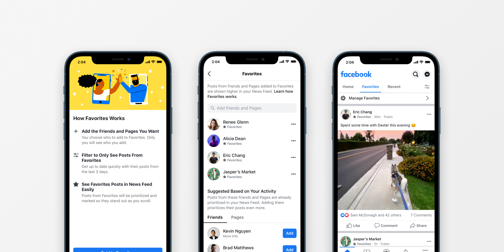

Facebook Favorites
In October 2020, my team launched Favorites, a new experience in News Feed that helps people stay caught up with the friends and Pages that they care most about.
Team
News Feed Controls
Timeline
August 2019 - October 2020
Role
Product Strategy, Interaction Design, Prototyping

Favorites is an end-to-end control and experience that includes new News Feed navigation patterns, in-feed visual branding, and a management surface that integrates transparency and education.
For more info on this project, including detailed case studies, please contact me via email.